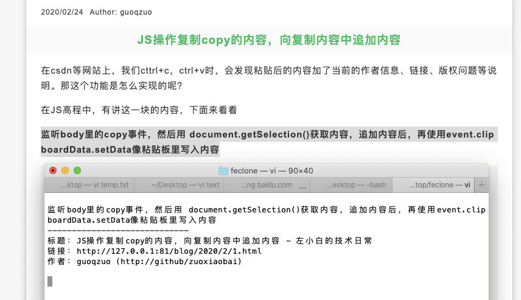

JS操作复制copy的内容，向复制内容中追加内容
这篇文章发布于 2020/03/02，归类于 JavaScript
标签：
js操作粘贴板内容，js向copy的内容中追加信息，js向复制信息里追加内容
在csdn等网站上，我们cttrl+c，ctrl+v时，会发现粘贴后的内容加了当前的作者信息、链接、版权问题等说明。那这个功能是怎么实现的呢？

在JS高程中，有讲这一块的内容，下面来看看
监听body里的copy事件，然后用 document.getSelection()获取内容，追加内容后，再使用event.clipboardData.setData像粘贴板里写入内容
// 操作粘贴板
// JS高程3 表单脚本 操作粘贴板
// https://www.yuque.com/guoqzuo/js_es6/ubpn7k#8482e7c5
document.body.oncopy = function(event) {
console.log('copy', event);
// 获取copy的内容
// console.log(document.getSelection().toString());
// 在copy内容里加入信息
var msg = `
-----------------------------
标题：${document.title}
链接：${location.href}
作者：guoqzuo (http://github/zuoxiaobai)
`
event.clipboardData.setData('text/plain', `${document.getSelection().toString()} ${msg}`);
event.preventDefault();
};